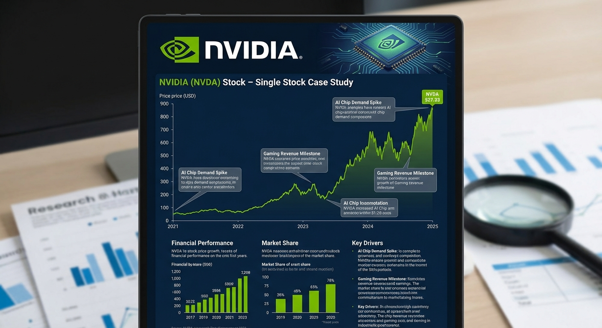

Topic 5
Single-Stock Case Study: NVIDIA (NVDA)
Medium
+1 Bonus Point

Topic 5 – Single-Stock Case Study: NVIDIA (NVDA)
Level: Medium Goal: Univariate forecasting and volatility exploration for a single stock.Dataset
- Source: NVIDIA (NVDA) Historical Stock Price Data – Kaggle
- Link: https://www.kaggle.com/datasets/elnazalikarami/nvidia-corporation-stock-historical-quotes
Download Instructions
- Open the dataset link above.
- Click "Download".
- Extract to
data/. - Use the main CSV (e.g.
HistoricalData_....csv).
Data Loading
import pandas as pd
df = pd.read_csv("data/NVDA_HistoricalData.csv") # adjust filename
df["Date"] = pd.to_datetime(df["Date"])
df = df.set_index("Date").sort_index()Implementation Steps
1. Data Exploration
- Load NVIDIA stock price data
- Inspect OHLC (Open, High, Low, Close) and Volume data
- Focus on Close price for forecasting
- Calculate returns (simple and log returns)
- Examine trading volume patterns
2. Exploratory Data Analysis (EDA)
- Plot stock price over time
- Plot returns distribution
- Analyze volatility clustering
- Calculate and visualize rolling statistics (mean, std)
- Perform time series decomposition
- Analyze ACF/PACF of prices and returns
3. Volatility Analysis
- Calculate realized volatility (rolling standard deviation of returns)
- Identify volatility regimes (high vs low volatility periods)
- Analyze volatility clustering (GARCH-like patterns)
- Plot volatility over time
4. Stationarity Analysis
- Test stock prices for stationarity (typically non-stationary)
- Test returns for stationarity (typically stationary)
- Apply differencing to prices if needed
- Consider log transformation
5. Model Building
- Price Forecasting:
- ARIMA models on prices or log prices
- Consider trend models
- Returns Modeling (optional):
- ARMA models on returns
- GARCH models for volatility (if time permits)
- Model Selection:
- Use AIC/BIC for comparison
- Validate on hold-out set
6. Model Evaluation
- Split data temporally (e.g., last 20% as test)
- Generate price forecasts
- Calculate accuracy metrics (MAE, RMSE, MAPE)
- Analyze forecast errors
- Visualize forecasts with confidence intervals
7. Volatility Forecasting (Advanced)
- If implementing GARCH:
- Model volatility dynamics
- Forecast future volatility
- Compare with realized volatility
Expected Deliverables
- EDA Report:
- Stock price and returns plots
- Volatility analysis
- Decomposition plots
- ACF/PACF analysis
- Model Results:
- Selected model with parameters
- Price forecast accuracy
- Volatility analysis (if applicable)
- Forecast plots
- Code:
- Complete Python notebook
- Functions for price/returns analysis
- Volatility calculation utilities
Tips
- Stock prices are typically non-stationary; use returns or differencing
- NVIDIA is a tech stock with high volatility - expect large price swings
- Consider external events (earnings, product launches) that affect prices
- Volatility clustering is common in stock returns
- Use log returns for better statistical properties
- Consider multiple forecast horizons (1-day, 1-week, 1-month)
- Document any major events (splits, earnings) that affect the series
Getting Started
This topic includes:
- README.md - Detailed implementation guide (this page)
- starter.ipynb - Jupyter notebook with installation and data loading code
- Featured image - Visual representation of the topic
Navigate to the Topic/5.NVIDIA_Stock/ directory to access all resources.